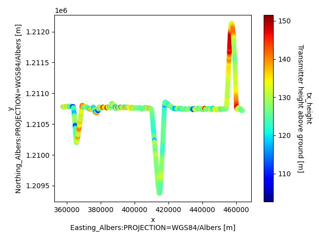
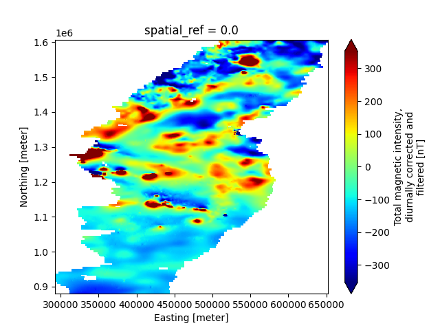

Note
Go to the end to download the full example code.
ASEG-GDF (Tempest AEM) & Magnetic Raster
This example demonstrates the workflow for creating a GS file from the ASEG file format, as well as how to add multiple associated datasets to the Survey. Specifically, this AEM survey contains the following datasets:
Raw AEM data, from the Tempest system
Inverted resistivity models
An interpolated map of total magnetic intensity
Dataset Reference: Minsley, B.J., James, S.R., Bedrosian, P.A., Pace, M.D., Hoogenboom, B.E., and Burton, B.L., 2021, Airborne electromagnetic, magnetic, and radiometric survey of the Mississippi Alluvial Plain, November 2019 - March 2020: U.S. Geological Survey data release, https://doi.org/10.5066/P9E44CTQ.
import matplotlib.pyplot as plt
from os.path import join
import gspy
Initialize the Survey
# Path to example files
data_path = "..//data_files//tempest_aseg"
# Survey Metadata file
metadata = join(data_path, "data//Tempest_survey_md.yml")
# Establish survey instance
survey = gspy.Survey.from_dict(metadata)
Create the first branch (container) called “data”
data_container = survey.gs.add_container('data', **dict(content = "raw data"))
Attach leaves to the data branch
Raw Data
Import raw AEM data from ASEG-GDF2 format. Define input data file and associated metadata file. Note for ASEG-GDF2 files, variable metadata is pulled directly from the DFN file associated with the DAT file. Any additional variable metadata, or desired overwrites to the DFN values, can be passed through the YAML.
# In this example, multiple systems are defined in the Tempest_data_md.yml metadata file
d_data = join(data_path, 'data//Tempest.dat')
d_supp = join(data_path, 'data//Tempest_data_md.yml')
# Add the raw AEM data to the data branch
rd = data_container.gs.add(key='raw_data',
data_filename=d_data,
metadata_file=d_supp)
Inverted Models
model_container = survey.gs.add_container('models', **dict(content = "inverted 1-D electrical resistivity models"))
# Define Path to inverted AEM models and corresponding metadata file
m_data = join(data_path, 'model//Tempest_model.dat')
m_supp = join(data_path, 'model//Tempest_model_md.yml')
# Add models to the model container, note this example contains a "parameters" group that
# is added as a leaflet below the model group.
mod = model_container.gs.add(key='inverted_models',
data_filename=m_data,
metadata_file=m_supp,
derived_from=rd)
Magnetic Intensity Map
# Create a new branch for the contractor-derived total magnetic intensity map
map_container = survey.gs.add_container('derived_maps', **dict(content = "derived maps"))
# Import the magnetic data from TIF-format.
# Note: raster data files are defined within the metadata file
d_supp = join(data_path, 'data//Tempest_raster_md.yml')
# Add the magnetic map to the data
maps = map_container.gs.add(key='maps', metadata_file = d_supp)
View the Data Tree
print(survey)
<xarray.DataTree 'survey'>
Group: /survey
│ Dimensions: ()
│ Coordinates:
│ spatial_ref float64 8B 0.0
│ Data variables:
│ survey_information float64 8B nan
│ survey_units float64 8B nan
│ flightline_information float64 8B nan
│ survey_equipment float64 8B nan
│ Attributes:
│ type: survey
│ title: Example Tempest Airborne Electromagnetic (AEM) Dataset
│ institution: USGS Geology, Geophysics, & Geochemistry Science Center
│ source: Contractor provided ASEG-GDF2 formatted data
│ history: This example dataset includes the raw AEM data and gridded ...
│ references: Minsley, B.J., James, S.R., Bedrosian, P.A., Pace, M.D., Ho...
│ comment: This dataset is incomplete and has been downsampled for the...
│ content: data branch containing raw AEM data (survey/data/raw_data) ...
│ conventions: CF-1.12, GS-2.0
├── Group: /survey/data
│ │ Dimensions: ()
│ │ Data variables:
│ │ spatial_ref float64 8B 0.0
│ │ Attributes:
│ │ content: raw data
│ │ type: container
│ └── Group: /survey/data/raw_data
│ │ Dimensions: (index: 2001, gate_times: 15)
│ │ Coordinates:
│ │ * index (index) int32 8kB 0 1 2 3 4 5 ... 1996 1997 1998 1999 2000
│ │ * gate_times (gate_times) float64 120B 1.085e-05 3.255e-05 ... 0.01338
│ │ spatial_ref float64 8B 0.0
│ │ x (index) float64 16kB 3.579e+05 3.579e+05 ... 4.637e+05
│ │ y (index) float64 16kB 1.211e+06 1.211e+06 ... 1.211e+06
│ │ z (index) float64 16kB 45.83 46.61 46.95 ... 43.22 43.14 43.03
│ │ Data variables: (12/58)
│ │ line (index) int32 8kB 225401 225401 225401 ... 225401 225401
│ │ flight (index) int32 8kB 10 10 10 10 10 10 10 ... 10 10 10 10 10 10
│ │ fiducial (index) float64 16kB 7.836e+03 7.836e+03 ... 9.835e+03
│ │ proj_cgg (index) int32 8kB 603756 603756 603756 ... 603756 603756
│ │ proj_client (index) int32 8kB 9999 9999 9999 9999 ... 9999 9999 9999
│ │ date (index) int32 8kB 20191128 20191128 ... 20191128 20191128
│ │ ... ...
│ │ z_primaryfield (index) float64 16kB 14.69 14.53 15.06 ... 14.29 13.33 13.83
│ │ z_vlf1 (index) float64 16kB 3.696 3.733 3.729 ... 3.754 3.717 3.73
│ │ z_vlf2 (index) float64 16kB 3.684 3.711 3.705 ... 3.728 3.692 3.721
│ │ z_vlf3 (index) float64 16kB 3.637 3.607 3.623 ... 3.623 3.578 3.604
│ │ z_vlf4 (index) float64 16kB 3.567 3.576 3.621 ... 3.585 3.572 3.605
│ │ z_geofact (index) float64 16kB 0.9969 0.9862 1.022 ... 0.9085 0.9425
│ │ Attributes:
│ │ content: raw data
│ │ comment: This dataset includes minimally processed (raw) AEM data
│ │ type: data
│ │ mode: airborne
│ │ method: magnetic, radiometric, electromagnetic, time domain
│ │ instrument: 30Hz Tempest
│ │ structure: tabular
│ └── Group: /survey/data/raw_data/tempest_system
│ Dimensions: (gate_times: 15, nv: 2, n_transmitter: 1,
│ waveform_time: 7, n_receiver: 2,
│ n_couplet: 2, dim_0: 1)
│ Coordinates:
│ * nv (nv) int64 16B 0 1
│ * n_transmitter (n_transmitter) int64 8B 0
│ * waveform_time (waveform_time) float64 56B -0.01667 ... 0....
│ * n_receiver (n_receiver) int64 16B 0 1
│ * n_couplet (n_couplet) int64 16B 0 1
│ Dimensions without coordinates: dim_0
│ Data variables: (12/26)
│ gate_times_bnds (gate_times, nv) float64 240B 5.43e-06 ... ...
│ transmitter_label (n_transmitter) <U1 4B 'Z'
│ transmitter_area (n_transmitter) int64 8B 155
│ transmitter_waveform_type (n_transmitter) <U6 24B 'square'
│ transmitter_waveform_current (waveform_time) float64 56B 0.0 1.0 ... 0.0
│ transmitter_scale_factor (n_transmitter) float64 8B 0.5
│ ... ...
│ couplet_txrx_dz (n_couplet) int64 16B -52 -52
│ data_normalized (dim_0) bool 1B True
│ output_data_type <U1 4B 'B'
│ reference_frame <U24 96B 'right-handed positive up'
│ output_sample_frequency (dim_0) int64 8B 5
│ digitization_frequency (dim_0) int64 8B 92160
│ Attributes:
│ type: system
│ mode: airborne
│ method: electromagnetic, time domain
│ instrument: 30Hz Tempest
│ name: tempest_system
├── Group: /survey/models
│ │ Dimensions: ()
│ │ Data variables:
│ │ spatial_ref float64 8B 0.0
│ │ Attributes:
│ │ content: inverted 1-D electrical resistivity models
│ │ type: container
│ └── Group: /survey/models/inverted_models
│ │ Dimensions: (index: 2001, layer_depth: 30, nv: 2,
│ │ gate_times: 15)
│ │ Coordinates:
│ │ * index (index) int32 8kB 0 1 2 3 4 ... 1997 1998 1999 2000
│ │ * layer_depth (layer_depth) float64 240B 1.5 4.65 ... 424.2 467.5
│ │ * nv (nv) int64 16B 0 1
│ │ * gate_times (gate_times) float64 120B 1.085e-05 ... 0.01338
│ │ spatial_ref float64 8B 0.0
│ │ x (index) float64 16kB 3.579e+05 ... 4.637e+05
│ │ y (index) float64 16kB 1.211e+06 ... 1.211e+06
│ │ z (index) float64 16kB 45.83 46.61 ... 43.14 43.03
│ │ Data variables: (12/46)
│ │ layer_depth_bnds (layer_depth, nv) float64 480B 0.0 3.0 ... 489.1
│ │ gate_times_bnds (gate_times, nv) float64 240B 5.43e-06 ... 0.01666
│ │ uniqueid (index) int32 8kB 0 1 2 3 4 ... 1997 1998 1999 2000
│ │ survey (index) int32 8kB 9999 9999 9999 ... 9999 9999 9999
│ │ date (index) int32 8kB 20191128 20191128 ... 20191128
│ │ flight (index) int32 8kB 10 10 10 10 10 ... 10 10 10 10 10
│ │ ... ...
│ │ phic (index) float64 16kB 0.4491 0.4759 ... 0.03086
│ │ phit (index) float64 16kB 0.0 0.0 0.0 ... 0.0 0.0 0.0
│ │ phig (index) float64 16kB 0.9652 0.6608 ... 0.4684 2.68
│ │ phis (index) float64 16kB 0.1158 0.1392 ... 0.03632
│ │ lambda (index) float64 16kB 0.5968 0.5487 ... 1.129 3.481
│ │ iterations (index) int32 8kB 20 19 25 25 25 ... 19 23 23 22 30
│ │ Attributes:
│ │ content: inverted resistivity models
│ │ comment: This dataset includes inverted resistivity models derived fr...
│ │ type: model
│ │ method: electromagnetic, time domain
│ │ instrument: 30Hz Tempest
│ │ mode: airborne
│ │ property: electrical conductivity
│ │ structure: tabular
│ └── Group: /survey/models/inverted_models/inversion_parameters
│ Dimensions: ()
│ Data variables:
│ parameters object 8B None
│ Attributes:
│ type: parameters
│ method: electromagnetic, time domain
│ instrument: 30Hz Tempest
│ mode: airborne
│ property: electrical conductivity
│ name: inversion_parameters
└── Group: /survey/derived_maps
│ Dimensions: ()
│ Data variables:
│ spatial_ref float64 8B 0.0
│ Attributes:
│ content: derived maps
│ type: container
└── Group: /survey/derived_maps/maps
│ Dimensions: (x: 599, nv: 2, y: 1212)
│ Coordinates:
│ * x (x) float64 5kB 2.928e+05 2.934e+05 ... 6.51e+05 6.516e+05
│ * nv (nv) int64 16B 0 1
│ * y (y) float64 10kB 1.607e+06 1.606e+06 ... 8.808e+05 8.802e+05
│ spatial_ref float64 8B 0.0
│ Data variables:
│ x_bnds (x, nv) float64 10kB 2.925e+05 2.931e+05 ... 6.519e+05
│ y_bnds (y, nv) float64 19kB 1.607e+06 1.606e+06 ... 8.799e+05
│ magnetic_tmi (y, x) float64 6MB nan nan nan nan nan ... nan nan nan nan nan
│ Attributes:
│ comment: contractor-derived product
│ content: gridded map of total magnetic intensity
│ type: data
│ mode: airborne
│ method: magnetic
│ instrument: Scintrex CS-3 cesium vapor magnetometer
│ structure: raster
└── Group: /survey/derived_maps/maps/magnetic_system
Dimensions: (base_mag_locations: 6, nv: 2,
n_transmitter: 1, n_receiver: 1,
n_couplet: 1, n_base_magnetometer: 1)
Coordinates:
* base_mag_locations (base_mag_locations) int64 48B 1 2 ... 6
* n_transmitter (n_transmitter) int64 8B 0
* n_receiver (n_receiver) int64 8B 0
* n_couplet (n_couplet) int64 8B 0
* n_base_magnetometer (n_base_magnetometer) int64 8B 0
Data variables: (12/35)
base_mag_locations_bnds (base_mag_locations, nv) float64 96B ...
transmitter_label (n_transmitter) <U7 28B 'passive'
transmitter_description (n_transmitter) <U107 428B "No artifi...
receiver_label (n_receiver) <U19 76B 'scalar_magneto...
receiver_sensor_type (n_receiver) <U12 48B 'cesium_vapor'
receiver_sensor_model (n_receiver) <U4 16B 'CS-3'
... ...
diurnal_correction <U142 568B 'Diurnal base values appli...
igrf_model_date <U10 40B '2019-12-01'
igrf_model_height <U7 28B '167.9 m'
igrf_removed_model_epoch <U6 24B '2015.0'
tieline_levelling <U137 548B 'RMI levelled to prior RES...
deliverables <U63 252B 'Total Magnetic Intensity (...
Attributes:
type: system
mode: airborne
method: magnetic
instrument: Scintrex CS-3 c cesium-vapor magnetometer
name: magnetic_system
Save NetCDF file
d_out = join(data_path, 'Tempest.nc')
survey.gs.to_netcdf(d_out)
Read back in the NetCDF file
new_survey = gspy.open_datatree(d_out)['survey']
Once the survey is read in, we can access variables like a standard xarray dataset.
Option A:
print(new_survey['derived_maps/maps'].magnetic_tmi)
<xarray.DataArray 'magnetic_tmi' (y: 1212, x: 599)> Size: 6MB
[725988 values with dtype=float64]
Coordinates:
* y (y) float64 10kB 1.607e+06 1.606e+06 ... 8.808e+05 8.802e+05
* x (x) float64 5kB 2.928e+05 2.934e+05 ... 6.51e+05 6.516e+05
spatial_ref float64 8B ...
Attributes:
standard_name: total_magnetic_intensity
long_name: Total magnetic intensity, diurnally corrected and filtered
units: nT
null_value: 1.70141e+38
valid_range: [-17504.6640625 11490.32324219]
grid_mapping: spatial_ref
Option B:
print(new_survey['derived_maps/maps']['magnetic_tmi'])
<xarray.DataArray 'magnetic_tmi' (y: 1212, x: 599)> Size: 6MB
[725988 values with dtype=float64]
Coordinates:
* y (y) float64 10kB 1.607e+06 1.606e+06 ... 8.808e+05 8.802e+05
* x (x) float64 5kB 2.928e+05 2.934e+05 ... 6.51e+05 6.516e+05
spatial_ref float64 8B ...
Attributes:
standard_name: total_magnetic_intensity
long_name: Total magnetic intensity, diurnally corrected and filtered
units: nT
null_value: 1.70141e+38
valid_range: [-17504.6640625 11490.32324219]
grid_mapping: spatial_ref
Plotting Examples
demonstrating different ways to access and plot variables
# Make a scatter plot of a specific tabular variable, using GSPy's plotter
plt.figure()
new_survey['data']['raw_data'].gs.scatter(x='x', hue='tx_height', cmap='jet')

Make a 2-D map plot of a specific raster variable, using Xarrays’s plotter
plt.figure()
new_survey['derived_maps/maps']['magnetic_tmi'].plot(cmap='jet', robust=True)
plt.show()

Total running time of the script: (0 minutes 1.324 seconds)